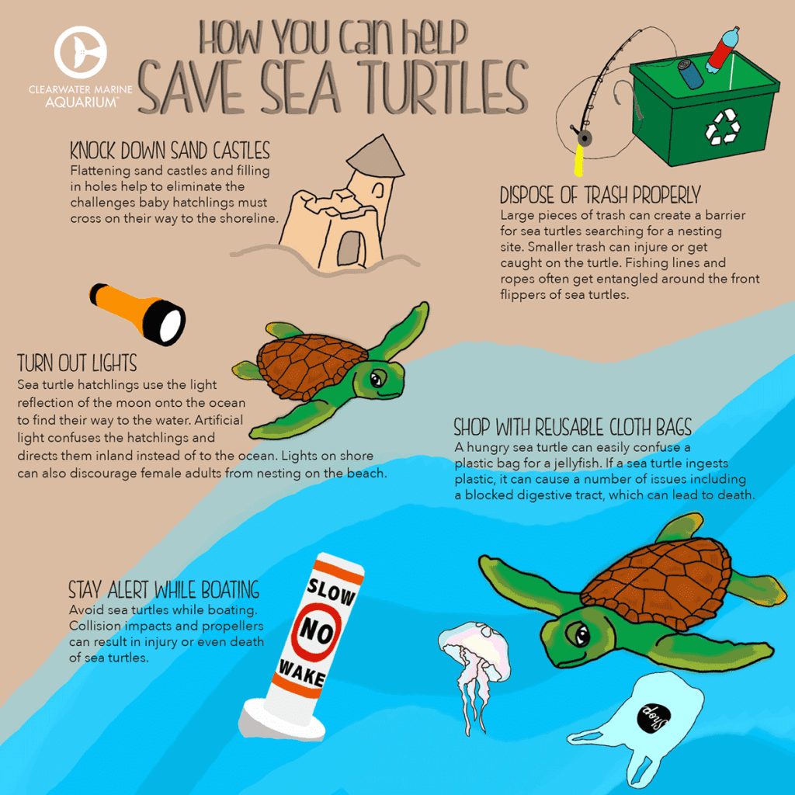

For more than a hundred million years, sea turtles have been essential to the preservation of the ocean's health. These amazing creatures guarantee the survival of the world's ocean's biodiversity as well as the condition of our coral reefs and seagrass beds. But tragically, they are seriously threatened by human activity. Six of the seven species of sea turtles are categorized as vulnerable, endangered, or severely endangered because of this. The good news is that you can take a lot of actions to improve the future for sea turtles. Participate in our top 7 strategies to conserve sea turtles as we observe World Sea Turtle Day on June 16th.

Reduce, reuse, and recycle your plastics.
Every year, more than 14 million tons of plastic make their way into the ocean. Sea turtles frequently consume this plastic thinking it is one of their favorite foods, jellyfish, and afterwards develop ill or pass away.
Sea turtles can suffer injury if plastic debris entangles their heads, limbs, or bodies, preventing them from moving freely or feeding.
Three of the best strategies to conserve sea turtles are to reduce your usage of plastic, make sure you reuse any plastics you have, and recycle it. The primary goal should be to use less plastic in the first place.
It is simple to avoid plastics when so many businesses provide alternatives.
Choose biodegradable disposable objects made of wood, bamboo, paper, or other sustainable materials, and switch to glass storage containers from plastic ones.
When plastic is your only option, make sure to recycle it.
Turn off your lights.
Check to see if sea turtles nest at your beach if you live near one or are visiting one while on vacation. If they do, take sure to switch off any lights that may be seen at night from the shore.
Sea turtles dig their nests at night because they enjoy the darkness. Sea turtles and their hatchlings may become confused by artificial lighting.
This lowers their likelihood of successfully reproducing and of new hatchlings making it to the ocean.
The odds of a sea turtle surviving to adulthood are 1 in 1,000, therefore they really need our assistance! The next time you visit the beach, give them the best opportunity possible by drawing your curtains and turning out your lights.
Do not buy anything made from sea turtles.
When you travel, it's possible that you'll come across gift shops selling regional trinkets and jewelry, some of which may be crafted from sea turtle shells.
The survival of marine turtles is seriously threatened by the trade in turtle shell.
It can be very challenging to distinguish between real turtle shell and imitations made of plastic or coconut shell. Keep it straightforward and avoid purchasing anything that appears to be made of turtle shell.
Collect loose fishing line and recycle it.
Make sure to gather and recycle any fishing line you find on the beach or while fishing. Fishing line that has been cast aside might cause harm or even death to sea turtles since they are unable to perceive it.
For you to clean up garbage whenever you visit the beach, this is a fantastic incentive. Have a bag nearby, grab a few things, and you'll be doing your part to protect marine turtles.